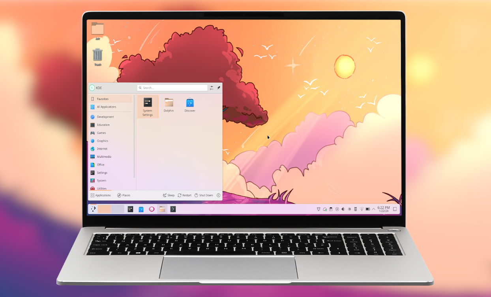
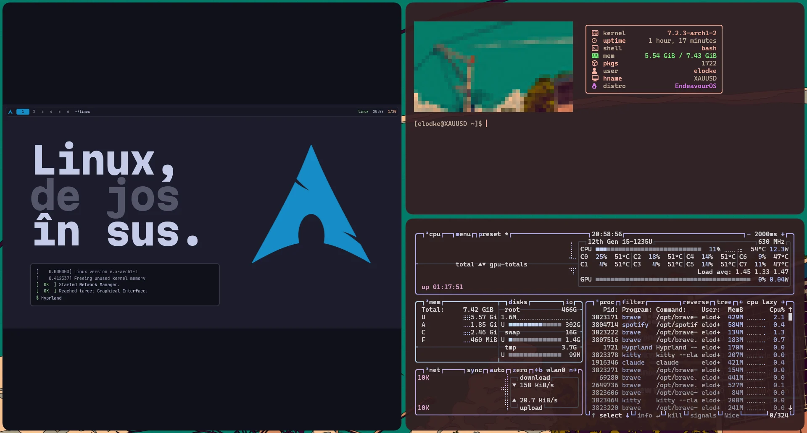

Linux,de jos
[ 0.000000] Linux version 6.x-arch1-1
[ 0.412337] Freeing unused kernel memory
[ OK ] Started Network Manager.[ OK ] Reached target Graphical Interface.$ Hyprland
Straturile.
tu vezi fiecare strat nu vezi
0 Hardware CPU · RAM · SSD · GPU
1 Kernel linux · drivere
2 init · systemd PID 1
3 Daemoni sshd · pipewire · NetworkManager
4 Grafică Wayland · compositor
5 Window manager Hyprland · i3 · KDE
6 Aplicații firefox · kitty · spotify
Apeși butonul.ce se întâmplă în câteva secunde
02
Bootloader systemd-boot 04
systemd PID 1 05
Desktop Hyprland · KDE
cât a durat · exemplu
$ systemd-analyzeStartup finished in 2.9s (firmware) + 0.6s (loader) + 1.1s (kernel) + 1.8s (userspace) = 6.4s
USERSPACE · RING 3 · AICI RULEAZĂ PROGRAMELE TALE · USERSPACE · RING 3 · AICI RULEAZĂ PROGRAMELE TALE ·
KERNEL · RING 0 · ARE ACCES LA TOT · KERNEL · RING 0 · ARE ACCES LA TOT · KERNEL · RING 0 ·
CPU
+ RAM + disc
firefox kitty spotify discord
Kernelul
Procese cine primește CPU, cât
Memorie fiecare program, cutia lui
Drivere vorbește cu hardware-ul
Syscall.singura ușă din ring 3 în ring 0
echo programul tău
ring 3
kernel verifică · execută
ring 0
ecran /dev/pts/0
write(1, "salut\n")
strace — ce vede kernelul
$ strace -e trace=write echo salut write (1, "salut\n" , 6) = 6 +++ exited with 0 +++
Totul e fișier.chiar și hardware-ul
/boot kernelul
/etc setări de sistem
/home tu
/usr programele
/dev hardware ca fișiere
/proc procese, live
/sys kernelul, live
/var/log jurnale
procesorul, citit ca text
$ grep -m1 "model name" /proc/cpuinfo model name : Intel(R) Xeon(R) Processor @ 2.80GHz
aleatoriu, dintr-un „fișier”
$ head -c 8 /dev/urandom | xxd 00000000: 9f3a 11c4 e07b 52d8 .:...{R.
PID1
primul proces.părintele tuturor.
systemd
systemd-journald NetworkManager sshd bluetoothd pipewire cronie · timere Hyprland
kitty firefox
O rețetă./etc/systemd/system/bot.service
bot.service
[Unit]
Description =Botul meuAfter =network-online.target
[Service]
ExecStart =/usr/bin/python /opt/bot/main.pyRestart =always
[Install]
WantedBy =multi-user.target
după internet
ce rulează
moare? repornește
pornește la boot
$ sudo systemctl enable --now bot
$ systemctl status bot
$ journalctl -u bot -f
„d” = daemon.rulează în fundal · fără fereastră · așteaptă
sshd
bluetoothd
systemd-journald
systemd-logind
cupsd
crond
NetworkManager
pipewire
dockerd
upowerd
De ce „daemon”? MIT, anii ’60: după demonul lui Maxwell, care sortează molecule în tăcere, fără să-l vadă nimeni.
Cine desenează ecranul.
X111987 · un intermediar
aplicația
X server
compositor
ecran
dus-întors prin X · mai lent · orice app vede orice tastă
Waylandazi · direct
aplicația
compositor = Hyprland
ecran
un singur program: server + compositor + window manager
Două filozofii.
Floating tu le muți · se suprapun
Tiling se așază singure · zero suprapuneri
În realitate.

KDE Plasma · floating · tot incluscaptură: kde.org

Hyprland · tiling · construit de mânăcaptură: laptopul meu, EndeavourOS
DE sau WM?
X11
Wayland
Floatingmouse-first
Tilingtastatură-first
Xfce Cinnamon Openbox Fluxbox
KDE Plasma GNOME labwc Wayfire
i3 dwm bspwm awesome xmonad
Hyprland sway niri river
DE = desktop complet, cu tot · WM = doar ferestrele, restul îl alegi tu
Rice.
desktop-ul tău, piesă cu piesă
$ fastfetch
fire▍
› firefox firewall-config
update gata 142 pachete
bara waybar terminal kitty · foot · alacritty launcher rofi · wofi · fuzzel wallpaper swww · hyprpaper notificări mako · dunst
totul stă în ~/.config → „dotfiles” pe GitHub
Totul e text.~/.config/hypr/hyprland.conf
hyprland.conf
$mod = SUPER
bind = $mod, Return, exec, kitty bind = $mod, D, exec, rofi -show drun bind = $mod, Q, killactivebind = $mod, 2, workspace, 2
general { gaps_out = 12 border_size = 2 }decoration { rounding = 10 }# salvezi → se aplică instant
SUPER +⏎ terminal
SUPER +D aplicații
SUPER +Q închide
SUPER +2 workspace 2
Distribuții.același kernel · altă rețetă în jurul lui
FAMILIA EXEMPLE PACHETE UPDATE-URI
Debian Ubuntu · Mintcele mai folosite pe desktop aptversiuni fixeUbuntu LTS: una la 2 ani Fedora Fedorasponsorizată de Red Hat dnfversiune nouăla ~6 luni Arch Arch · EndeavourOSrecomand EndeavourOS = Arch cu installer grafic pacmanrollingmereu la zi, fără versiuni mari
Tot ce am văzut până aici (kernel, systemd, Wayland, tiling ) e la fel pe toate trei.
pacman & AUR managerul de pachete din Arch · Ubuntu are apt, Fedora dnf
core · extra
oficial · semnat · binar
AUR
comunitate · rețete PKGBUILD
yay / paru
descarcă · compilează
sistemul tău
rolling release · mereu la zi
⚠ citește PKGBUILD-ul înainte. oricine poate urca orice.
-S numeinstalează
-Syuupdate la tot
-Ss cuvântcaută
-Rns numeșterge curat
yay -S numedin AUR
Instalarea.Arch, de mână, în terminal
01 Boot de pe ISO archlinux.iso
02 Internet iwctl
03 Partiții cfdisk · mkfs
04 Sistemul de bază pacstrap /mnt base linux
05 Intri în el arch-chroot /mnt
06 Bootloader bootctl install
07 User + parolă useradd -m tu
08 Reboot pacman -S hyprland
sau, recomandarea mea →EndeavourOStot Arch, cu installer grafic · 15 minute
Fițuica.
fișiere
ls -la · cd · pwdunde sunt, ce e aici
cp · mv · rm -rcopiază · mută · șterge
nvim fișiereditează
grep -r "text" .caută în fișiere
procese
btopce mănâncă CPU/RAM
kill -9 PIDomoară
ps aux | grep numegăsește
systemd
systemctl status Xmerge?
systemctl enable --now Xpornește + la boot
journalctl -b -p errerorile de azi
sistem
sudo pacman -Syuupdate · pe Ubuntu: apt upgrade
df -h · free -hdisc · RAM
lsblkdiscurile
ip aIP-ul tău
man comandamanualul oricărei comenzi
./o.
./sssso-
`:osssssss+-
`:+sssssssssso/.
`-/ossssssssssssso/.
`-/+sssssssssssssssso+:`
`-:/+sssssssssssssssssso+/.
`.://osssssssssssssssssssso++-
.://+ssssssssssssssssssssssso++:
.:///ossssssssssssssssssssssssso++:
`:////ssssssssssssssssssssssssssso+++.
`-////+ssssssssssssssssssssssssssso++++-
`..-+oosssssssssssssssssssssssso+++++/`
./++++++++++++++++++++++++++++++/:.
`:::::::::::::::::::::::::------``
tu @endeavour
----------
OS : EndeavourOS x86_64
Bază : Arch Linux
Kernel : linux
Init : systemd
WM : Hyprland (Wayland)
Shell : zsh
Terminal : kitty
Packages : pacman + AUR
i use arch btw. (prin EndeavourOS, care e tot Arch)